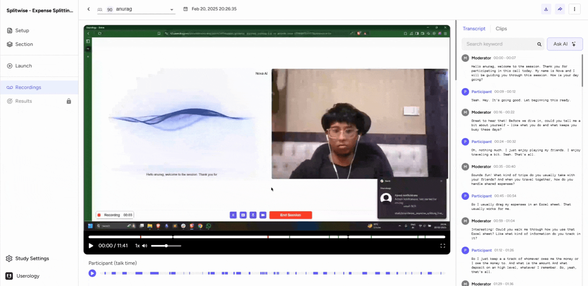
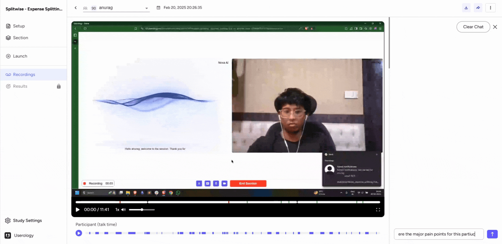

The Ask AI feature in Userology enables you to ask targeted questions based on a participant's transcript. This tool provides quick, actionable insights to enhance your analysis.
Accessing a Participant's Response
-
Navigate to the Recordings tab in your study.
-
Select the participant response you want to analyze.

Using the Ask AI Button
-
Locate the Ask AI button within the participant's response. You will see elements like the participant video and transcript.
-
Click the Ask AI button to begin asking questions.

Asking Questions and Getting Insights
The Ask AI feature allows you to ask session-specific questions. For example, you can inquire about the participant's major pain points. The AI analyzes the transcript to identify issues, such as confusion with the initial screen or challenges with expense tracking.
You can also ask follow-up questions to gain deeper insights into the participant's experience.

If you need further help, please email us at support@userology.co